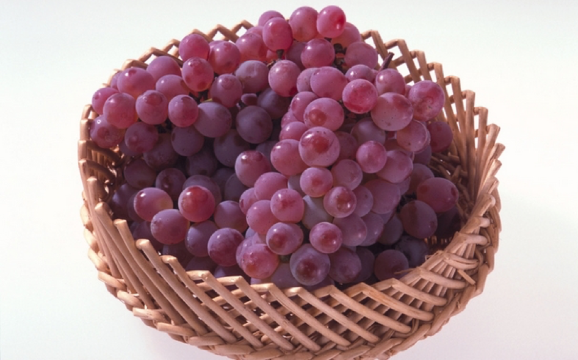

酒杯：葡萄酒的“行头”
在选用葡萄酒杯之前，熟知葡萄酒杯的分类是非常有必要的。
酒杯之分类
现代意义上的酒杯通常由杯身、杯梗及杯底组成。据葡萄酒专业人士介绍，杯柄和杯身是成一定比例的，但是这个比例并没有特殊的规定，只是考虑到酒杯在视觉上带给人的感受。使用高脚杯品饮葡萄酒的好处是：持杯时可以用拇指、食指和中指捏住杯柄，手不会碰触杯身，从而避免手的温度影响葡萄酒的最佳饮用温度。
在选用葡萄酒杯之前，熟知葡萄酒杯的分类是非常有必要的。伴随人们对于葡萄酒品饮需求的提高，葡萄酒杯的类型也愈发具有细分化的趋势。除了按照产地、厂牌之外，另有工艺、材质、功能以及形状的差别。倘若从粗略的角度进行划分，葡萄酒杯大致有三种类别：按工艺分类，包括机器酒杯、半机器半手工酒杯、全手工酒杯；按材质分类，包括一般水晶玻璃酒杯、无铅水晶玻璃酒杯、普通玻璃酒杯；按功能分类，包括红葡萄酒杯、白葡萄酒杯、香槟杯、甜酒杯、烈酒杯、ISO 杯、专业盲品杯等等。
在选用葡萄酒杯之前，熟知葡萄酒杯的分类是非常有必要的。在选用葡萄酒杯之前，熟知葡萄酒杯的分类是非常有必要的。
功能之于酒杯
高明的酒客玩弄酒杯的手法相当优雅，通过葡萄酒在杯中回旋的状态来鉴赏酒色，从而判断葡萄酒的优劣。因此，酒杯要做得轻，拿起来不至于坠手；做得薄，才能清晰地看到酒的色泽。不同类型的酒杯考虑到品饮的需要，可谓各具特点。一般来说，造成酒杯千差万别的决定性因素包括开口设计以及杯肚大小(酒杯在杯壁厚度上的差别并不是很大)。其中，开口设计的不同决定了酒体入口的流向。我们知道，舌头的味蕾有不同的敏感区域，舌尖对应的是甜味儿，舌头内侧对应的是酸味儿，舌头外侧对应的是咸味儿，舌根部对应的则是苦味儿。杯子的形状、杯口的大小决定了酒体入口时与味蕾的第一接触点，从而影响酒的味道。举例来说，开口小的杯，在饮酒时，头部势必要向下低，酒流入舌头的第一个感官区便是舌尖，从而突出的是酒的香气和果味儿的甜美。
传统的红葡萄酒杯在外观设计上通常会比较大。红葡萄酒无论从酒体还是香气都更加浓郁一些，因此，它需要更大的酒面(Surface)才能让酒的香气更好地发挥出来。窄口宽肚是红酒杯中的经典设计，窄口是为了使酒的香气聚集在杯口，不易散逸，以便充分品闻酒香和果香；宽肚是为了让红酒充分和空气接触，以前流行的酒杯都是小巧精致的样式，现在时兴的大肚杯，拿在手上更加堂皇绚丽。红葡萄酒杯基本可以分为两类，即波尔多杯和勃艮第杯，分别针对两地所产的不同的葡萄品种而设计。
在外观设计上，白葡萄酒杯的杯身较红葡萄酒杯要稍显修长，弧度较大，但整体高度要低于红葡萄酒杯。因为白葡萄酒在口感和味道上要略微清淡，不需要较大的杯肚来释放酒体的香气。根据葡萄品种的不同，白葡萄酒杯比较常见的大致有三种，霞多丽(Chardonnay)杯、长相思(Sauvignon Blanc)杯以及雷司令(Riesling)杯。由于长相思属于清爽、甘洌型的葡萄酒，因此其酒杯的开口和杯肚都比较小，这样酒体会瞬即流入舌尖，使口腔被酒的花香和果香所包裹，从而淡化酒体的酸度；霞多丽酒杯在开口和杯肚上要相对大一些，它的酒体比较饱满，适宜选用圆肚形的酒杯；而雷司令酒杯在杯肚上要更高一些，它的酒体在酸度上要略胜一筹，这样的设计能够减缓酒体流入口腔的速度。
香槟杯的杯身应该具备一定的长度，从而能够充分欣赏酒体在杯中持续起泡的乐趣，同时酒体能够缓慢地流入口腔，可以细细品饮；考虑到甜酒含糖量较高、适宜餐后饮用的特点，甜酒的杯子都不是很大，其开口设计也较小，从而更好地突出酒体的香气以及蜂蜜的味道；而烈酒杯在外观上也要相对小一些，从而避免过量饮酒带来的尴尬。
另外，酒杯分类中还有一些专业性的酒杯，这也是我们应该熟悉的酒杯类型。国际标准品酒杯又称为 ISO 杯(International Standards Organization)，是1974年由法国 INAO(国家产地命名委员会)设计、现在广泛用于国际品酒活动的全能型酒杯。它的杯脚高5~6厘米，酒杯容量在215毫升左右，酒杯口小腹大，杯形如同盛开的郁金香。杯身容量很大，这使得葡萄酒在杯中可以自由呼吸；略微收窄的杯口设计，是为了让酒液在晃动时不至于外溅，且使酒香能够在杯口聚集，以便更好地感受酒香。简单地说，专业盲品杯是带有黑色涂层的 ISO 规格的酒杯，用于盲品(Blind Tasting)环节之中。大家熟悉的盲品环节通常以布或锡箔纸遮盖酒标，而专业盲品杯的出现则增加了盲品的难度，从而对试酒者的水平提出了更高的要求。
在使用上述酒杯进行品饮的过程中，遵循葡萄酒品评的通用惯例。简单地说，首先观察葡萄酒的色泽；其次晃动酒杯，令酒体在杯壁中形成“挂杯”，同时与空气充分接触，以便从嗅觉上感受酒体的香气；最后，小口品饮，让酒液在口腔中停留一段时间，从而使味蕾充分感受酒体的味道。至于倒酒时酒量的多少，相信也是大家普遍关注的问题。一般来说，白葡萄酒/甜酒的量大约在3盎司(大约90毫升)左右，红葡萄酒的量大约控制在5盎司(大约150毫升)即可。
材质之于酒杯
17世纪末，玻璃成为酒杯选料中的主打材质，至此，人们逐渐摆脱了仅凭味觉品饮的单调，开始注重从视觉欣赏的层面品鉴美酒。随后，水晶玻璃的横空出世又使得人们对于葡萄酒的鉴赏向着更加精确、雅致的维度挺进。
目前，葡萄酒杯的材质以玻璃和水晶为主。虽然在外观上极为相似，但是水晶酒杯和玻璃酒杯带来的香气与口感会存在细微的差别，这是由两者表面相异的粗糙程度所致。通过显微镜可以观察到，与玻璃平滑的表面相比，水晶表面具有较多的凹凸面，葡萄酒在酒杯晃动的过程中，利于打破酒分子释放香气；用其盛放香槟酒，气泡的表现会更加出色，同时杯壁上的凹凸面能够持久地留住酒体的泡沫，而这正是香槟酒的灵魂所在。此外，水晶材质具有较强的韧性，耐磨度较高；光的折射点也是异常丰富，从而使酒杯在自然光的照射下显得格外美观；而其不含任何色泽、完全透明的特质能够更好地烘托葡萄酒的美感，还原酒体的本来面目(玻璃通常带有灰绿的色泽)。基于以上诸种因素，水晶杯才会成为爱酒人士的首选。
按照国际通行的标准，水晶玻璃中氧化铅的含量一定要达到24%，这样制作出的水晶杯才算是质量达标的上乘之作。在保养上，水晶杯用清水洗净即可。需要特别注意的是，清洗酒杯时，一定要握住杯身，避免拿捏杯梗，不然轻轻一转，价值不菲的水晶杯子便只能落得破碎的下场。必要的时候，可以加入洗涤剂。在此，葡萄酒专业人士提醒大家一定要保证冲洗干净，因为残留的洗涤剂也容易形成“挂杯”的现象。最后，擦完的杯子，最好不要放回盒中，否则杯子会吸味儿，从而影响酒体的品饮。
另外，在用水晶杯进行碰杯的过程中，要使用杯肚进行触碰，而不是杯口，因为杯口是水晶杯最脆弱的部位，触碰极易引起酒杯碎裂。针对目前市面上流行的 XX 品牌酒杯具有超强性能、不易破碎的说法，葡萄酒专业人士提醒消费者，所有的玻璃或者水晶制品都是易碎物品，在选购酒杯的时候，一定要认准品牌，避免盲目选购而造成不必要的损失。口碑不错的酒杯品牌包括：Riedel、Schott、Spiegelau、ARC 等等，消费者可根据自己的经济承受能力选择相应的酒杯。